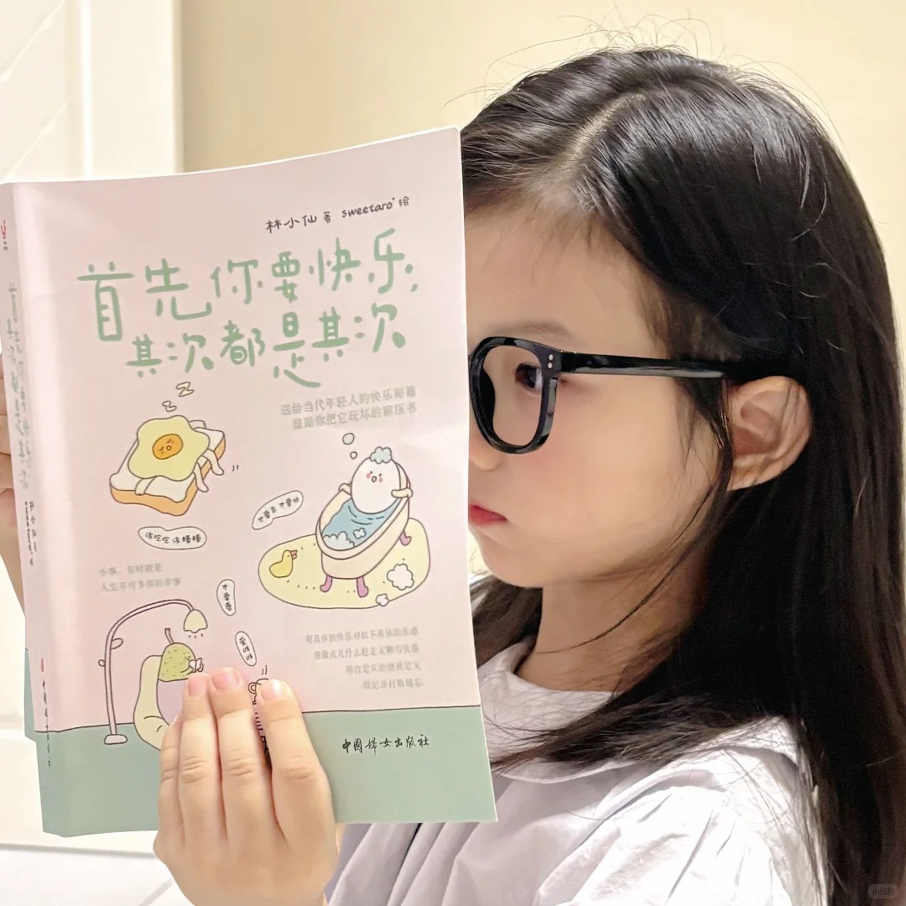

...
负责学院新媒体矩阵运营，策划执行多场学术讲座与品牌活动，推动学院官方账号粉丝增长与内容迭代。
带领 20 人团队完成足式机器人全栈研发，统筹机械、电控、视觉多组协作，获全国赛三项二等奖。
主持「仿生水下机器人」大创项目，负责技术路线制定与成果转化，获省级优秀结题并参展世界航海装备大会。
从策划第一支短视频到操盘完整的投放，我在内容创意、平台算法与数据反馈的闭环中，持续寻找品牌增长的最优解。
擅长以 Python 与 SQL 清洗投放数据，以 AIGC 工具批量生成创意素材，再以 BI 看板追踪从曝光到成交的完整链路，致力于让每一次点击都产生可量化的商业价值。